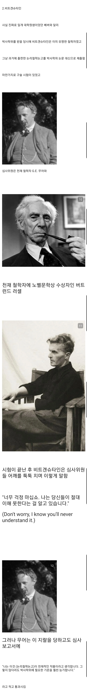
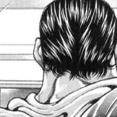
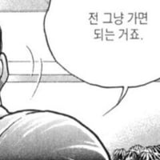

간지 넘치는 박사논문 심사과정
댓글

논리철학논고는 무슨 수학기호도 나오던데


비트겐슈타인은 전쟁통에 참호에서 삶의 의미를 찾겠다고 시원하게 딸치고 그걸 또 일기장에 쓴 놈이라 오히려 납득이 감
2번은 사실 무어의 발언만 사실이고 러셀이 비트겐슈타인의 스승격인데다
둘이 티격태격을 꽤 했던 걸 생각하면 그다지 신빙성은 없어보임
멘트 자체가 러셀과 투닥거릴 때 하던 말이라는 걸 생각하면 더더욱 와전된 이야기같음
지금은 모르겠는데 저 당시가 확실히 낭만 하나는 죽이네
무댓 깨기!